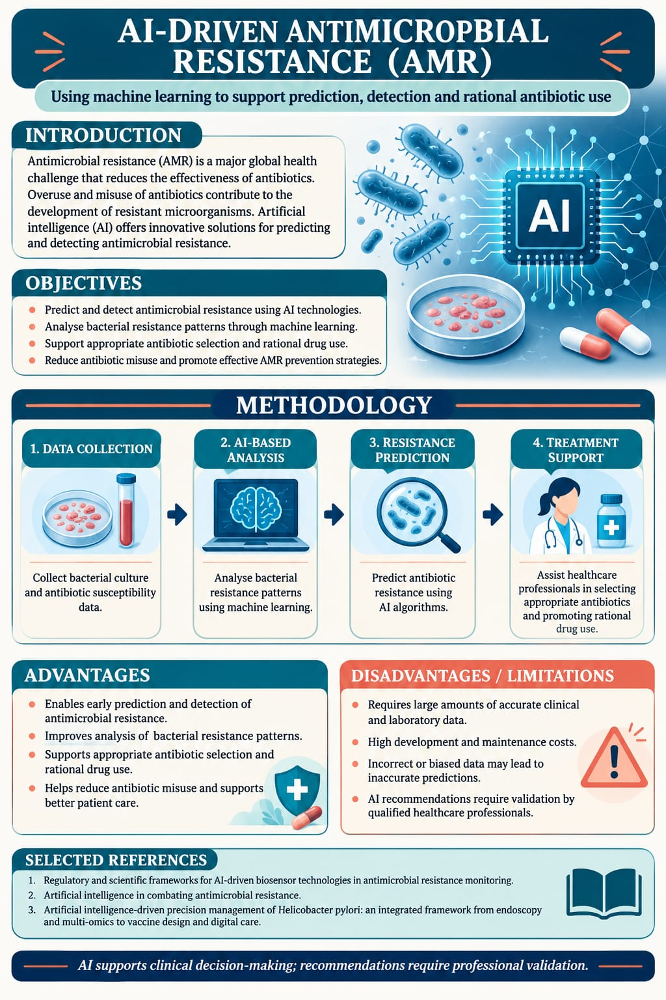
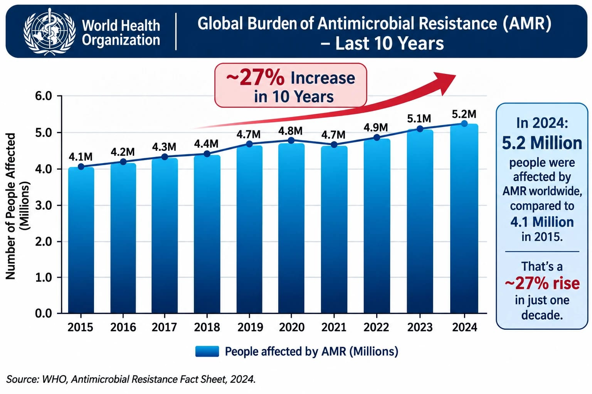

Tap the poster to view it in full size.
Introduction
Antimicrobial resistance (AMR) is a major global health problem in which microorganisms such as bacteria, viruses, fungi and parasites develop the ability to resist medicines designed to kill them or stop their growth. As a result, antimicrobial drugs become less effective, making infections difficult to treat.
Overuse and misuse of antibiotics, incomplete treatment and improper antibiotic use contribute to the development and spread of resistance. AMR can lead to prolonged illness, treatment failure, increased healthcare costs and a higher risk of death.
Artificial Intelligence (AI) can help predict, detect and analyse resistance patterns, supporting healthcare professionals in selecting appropriate treatments and preventing the spread of AMR.
Objectives of AI-Driven Antimicrobial Resistance (AMR)
The main objectives of using Artificial Intelligence (AI) in AMR are:
- Predict and Detect AMR: To identify and predict antimicrobial resistance at an early stage using AI technologies.
- Analyse Resistance Patterns: To study bacterial resistance patterns using machine learning.
- Support Antibiotic Selection: To help healthcare professionals choose appropriate antibiotics for effective treatment.
- Reduce Antibiotic Misuse: To promote the proper use of antibiotics and prevent the development and spread of antimicrobial resistance.
Methodology
The methodology of AI-driven antimicrobial resistance involves four important steps.
- Data Collection: Bacterial culture samples and antibiotic susceptibility data are collected through laboratory tests.
- AI-Based Analysis: Artificial intelligence and machine learning analyse the collected data to identify bacterial resistance patterns.
- Resistance Prediction: AI algorithms predict whether bacteria may be resistant to specific antibiotics.
- Treatment Support: AI helps healthcare professionals identify suitable antibiotic options based on the predicted resistance patterns.
These four steps help improve early detection, support appropriate antibiotic selection and promote rational drug use. AI can also help reduce unnecessary antibiotic use and support better patient care.
Advantages of AI-Driven Antimicrobial Resistance (AMR)
- Early Detection: AI helps identify antimicrobial resistance at an early stage, allowing faster diagnosis and treatment.
- Improved Analysis: Machine learning analyses large amounts of bacterial data and identifies resistance patterns.
- Better Antibiotic Selection: AI supports healthcare professionals in choosing appropriate antibiotics based on predicted resistance.
- Reduced Antibiotic Misuse: It helps avoid unnecessary antibiotic use and promotes rational drug usage.
- Faster Decision-Making: AI analyses laboratory and clinical data quickly, supporting timely treatment decisions.
- Improved Patient Care: Early detection and appropriate treatment support better patient outcomes.
- AMR Prevention: AI helps monitor resistance trends and supports strategies to control the spread of resistant microorganisms.

Disadvantages / Limitations
- Requires large amounts of accurate clinical and laboratory data.
- High development and maintenance costs.
- Incorrect or biased data may lead to inaccurate predictions.
- AI recommendations require validation by qualified healthcare professionals.
Global Burden of Antimicrobial Resistance (AMR) – 2015 to 2024
The graph illustrates the increasing global burden of antimicrobial resistance over the last 10 years. According to the figures shown, approximately 4.1 million people were affected by AMR in 2015, which gradually increased to 5.2 million in 2024. This represents an approximate 27% increase over the decade.
The trend highlights the growing impact of antimicrobial resistance on global health. It also emphasizes the importance of early detection, proper antibiotic use, effective treatment strategies and AI-based technologies to help predict and control antimicrobial resistance.
